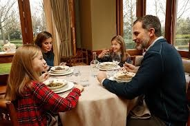

It is confirmed once again: Spain continues to reign as one of the world's countries with the highest density of bars and restaurants. Spaniards seem to have simply cracked the code for quality of life – good food, good company, and a glass in hand.
Even after the pandemic and several tough years for the restaurant industry, the numbers are impressive. Today there are over 300,000 food and beverage establishments in Spain, including bars, restaurants, cafes, and tapas bars.
In other words: in Spain, it is significantly easier to find a bar than a parking spot – and sometimes even easier than finding an ATM.

Here we find culinary creators who conjure up classics like paella, gazpacho, churros, and of course the almighty tapas in their kitchens – a concept that in itself is proof of Spain's love for social eating. Spanish food culture is not just about what is on the plate, but about community, pace, and enjoyment.
And what would a party be without a drink? Spain claims to have given the world sangria, and wine lovers know the country is a paradise. From Rioja and Ribera del Duero to Priorat, Rías Baixas, and Jerez – Spain is home to some of the world's most appreciated wine regions.
So if you ever consider moving to Spain or buying a holiday home, remember that you are not just investing in sun, beaches, and culture. You are also investing in something at least as important:
- 👉 A local bar where they recognize you.
- 👉 A restaurant around the corner that becomes your second living room.
So book the ticket, come with an open mind – and an even bigger appetite. Welcome to Spain, where every meal is a feast and every glass is a toast to life.
Cheers! 🍷